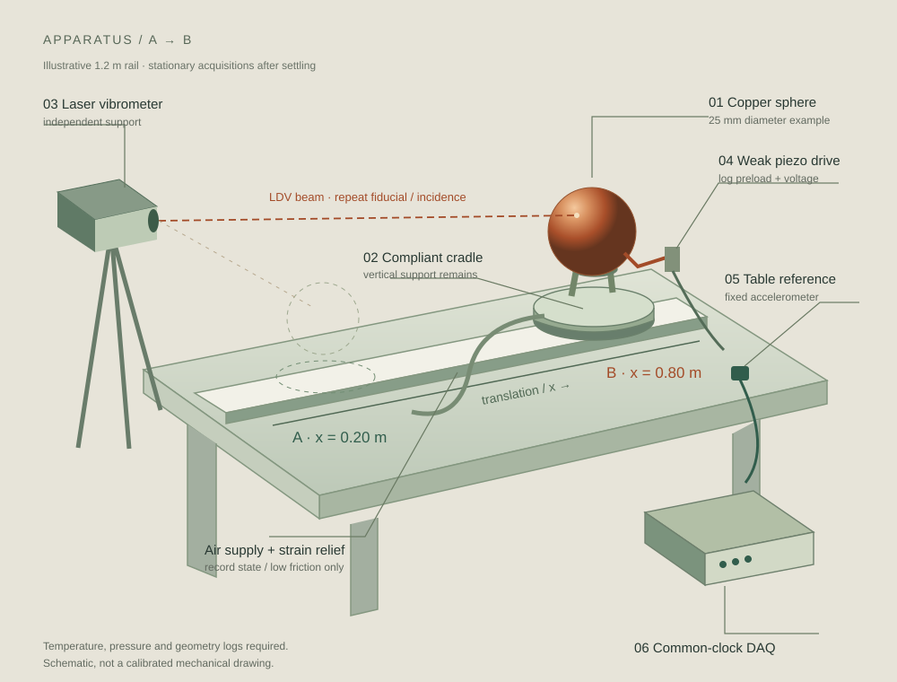
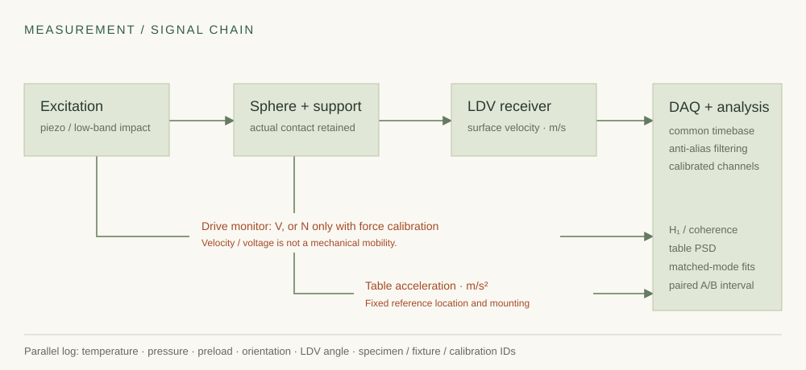

Surface motion
Measure one component of the sphere's surface velocity with a laser Doppler vibrometer. Match the same mode and surface fiducial at A and B.
v(t) · m/sPOSITION SPECTROSCOPY / RESEARCH NOTE 004
Move a copper sphere across a table. Does its vibration change, or does the way we observe it change?
A practical experiment in separating an object's elastic modes from its support, surroundings and measurement path.
Explore the measurement ↗
01 / DEFINE WHAT IS BEING MEASURED
A table coordinate has a response to a particular input. A sphere has many modes, generally not an integer harmonic series. Neither has a single “entire frequency.”
Measure one component of the sphere's surface velocity with a laser Doppler vibrometer. Match the same mode and surface fiducial at A and B.
v(t) · m/sRecord the table acceleration and drive reference. A different position can change a transfer function through geometry and contact.
a(t) · m/s²Log sphere/room temperature, support preload, air pressure, receiver angle and timestamps. Map airborne pressure in its own calibrated band.
T · °C / p · PaA REALISTIC CARRIAGE
The same compliant cradle travels on a low-friction air-bearing carriage. Vertical support and drive contact remain. Record the air-supply state and repeat it at both positions.
Keep the LDV on an independent support; reacquire the same surface point and incidence angle. Translate between acquisitions. A continuously moving measurement would require a separate Doppler and nonstationarity model.
Open the full signal-chain drawing ↗
| Tier | Illustrative band / acquisition | Required distinction |
|---|---|---|
| Table / audio demonstration | 20 Hz–20 kHz / 96 kS/s | Calibrated microphone, accelerometer and band-appropriate force input. This does not test the illustrated ultrasonic radial modes. |
| First radial-mode survey | 10–250 kHz / 1 MS/s | LDV and analog chain calibrated through the band, anti-alias filtering, weak piezo drive and measured preload. Confirm the actual specimen first. |
| Broader radial-family survey | Up to 700 kHz / 2 MS/s | An illustrative requirement covering the three default modeled modes. Sensor, drive, DAQ and filters all need this usable band. |
A piezo drive voltage gives a velocity/voltage response in (m/s)/V. Call it force-to-velocity mobility only when actual force is calibrated in the analysis band. An ordinary impact hammer is not automatically a calibrated ultrasonic force source.
02 / THE VIRTUAL INSTRUMENT
Change material and size, then compare two synthetic observations. These calculations use a free, homogeneous, isotropic sphere and a selected radial mode family.
First three positive l = 0 breathing modes. These are not all modes or necessarily the three lowest modes of a real sphere. The sphere's surface is traction-free in this calculation.
On a small screen, scroll the plot to inspect all three modes.
The synthetic spring uses whole-sphere mass as an illustrative modal mass. It does not predict a real table-contact shift. The plot spans three modeled modes and does not inherit the first-mode sampling status below.
PLAN THE FIRST RADIAL MODE
Sampling arithmetic is one check. Usable sensor bandwidth, analog anti-alias filtering, calibration and signal-to-noise remain experimental requirements.
For a linear isotropic sphere, cL = √[E(1−ν)/(ρ(1+ν)(1−2ν))] and cT = √[E/(2ρ(1+ν))]. Zero radial surface traction gives:
x j₀(x) − 4(cT/cL)² j₁(x) = 0 · f = x cL / (2πR)
The solver excludes the trivial zero and calculates three positive radial roots. Size, material parameters and boundary conditions define the model. Position alone does not appear in its free-sphere eigenproblem.
Read the derivation and uncertainty budget ↗03 / THE EXPERIMENT CONTRACT
The target is a repeatable difference in the same identified mode. Define the smallest meaningful shift and the analysis rule before the final acquisitions.
Record diameter, mass, copper grade, orientation and temperature. Select a mode, analysis band and calibrated readout. Check drive linearity.
Map the table and carriage at A/B, then add the sphere. Keep support, preload, cable strain and air state repeatable.
Use equally spaced ABBA and BAAB blocks, balanced and randomized with a saved seed. Measure while stationary after predefined settling.
Run sham movement, remount, orientation, thermal and preload controls. Monitor a stationary reference and repeat on another day.
Match mode shape, frequency and damping. Preserve excluded runs and fit residuals. An interval containing zero does not automatically prove equivalence.
04 / PAPERS → METHODS → OPEN QUESTIONS
Loading the source map…
Edges describe a relationship, not proof. Select a paper node to inspect its source record. The source list below is also a text alternative to the graph.
The official 6 October 2026 OpenAI mathematics release is included with a pinned repository revision. Its reported elasticity result assumes a complete static boundary map, much richer data than two spectra; its proof was not audited here. No equivalent single Anthropic bulk release was established in this search, so specific official mathematics and quantum-circuit reports are linked.
Accepted ICLR 2025 and NeurIPS 2024 inverse-model papers inform future methods. Direct apparatus evidence comes mainly from specialist physics and metrology journals. Actual venues and reading depths are recorded without a universal “Tier A” ranking.
These are methodological connections. The page uses classical mechanics and numerical analysis; the cited AI reports do not establish a unique frequency assigned to a location.
05 / FROM PROPOSAL TO YOUR OWN DATA
Analyze calibrated records locally. The tools calculate H1 transfer functions, coherence and table spectra, then compare matched modes across balanced blocks.
Stationary traces: synchronized time, calibrated force, sphere velocity and table acceleration. Matched-mode records: block, order, position, acquisition midpoint, fitted frequency and temperature.
Trace peaks are candidate response bins, not fitted natural poles. Block intervals omit unmodeled systematic effects. The included demo is synthetic; no copper experiment has been performed.
Analysis instructions and CSV schemas ↗python make_demo.py --output /tmp/demo
python analyze.py blocks \
/tmp/demo/synthetic-blocks.csv \
--synthetic --output /tmp/result.jsonEstablished physics guides the model. Computation checks the implementation. A controlled measurement must decide the remaining question.